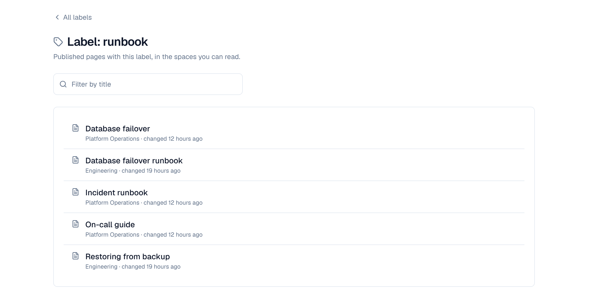
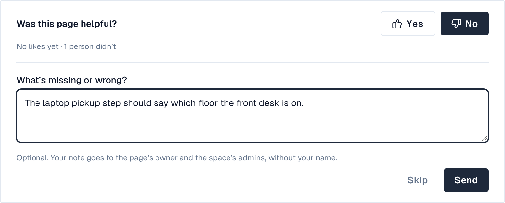

1. Labels
Labels group pages across spaces, such as runbook or onboarding. They are shared by the whole Wiki: the same label in two spaces is one label.
- People who edit a page add labels under Labels in Page details: type one and press Enter or a comma, or pick a suggestion. Up to 50 per page.
- A label is letters, digits, -, _ or ., without spaces, up to 50 characters, and is kept in lower case.
- Labels show at the end of a published page. Signed in, select one to see every published page with it, in the spaces you can read.
- Labels (at /labels) finds a label by its first letters.
- Spaces carry labels too, up to 10 each, set by the space's admins in its settings (Spaces). A label's page lists the spaces you can see with it above its pages, and the space list can be filtered by a label.
- Open the page and select Edit.
- Open Page details, the side panel of the editor, if it is hidden.
- Under Labels, type a label and press Enter, or pick a suggestion. It is saved at once.
- To take a label off, select the × next to it.

Administrators who manage labels see every label there with how many pages and spaces carry it, and can Rename one on every page and space (renaming to a label that exists merges the two) or Remove it from every page and space.
2. Was this page helpful?
Under a published page, signed-in readers answer Was this page helpful? with Yes or No, and can change or take back their answer.
- After No, you can say What’s missing or wrong? in a note of up to 1,000 characters. The note goes to the page's creator and the space's admins without your name; the creator gets an alert.
- Everyone sees how many people found the page helpful. Names of people who liked it show to those who may see people in the space.
- In the editor, Was it helpful? in Page details shows the counts and, for the page's creator and the space's admins, the notes.

Pages marked unhelpful most often show in content health.